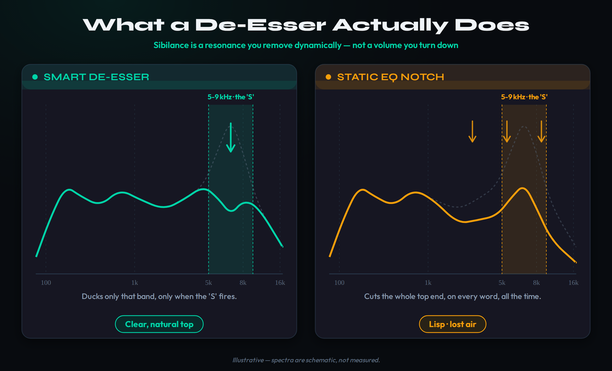
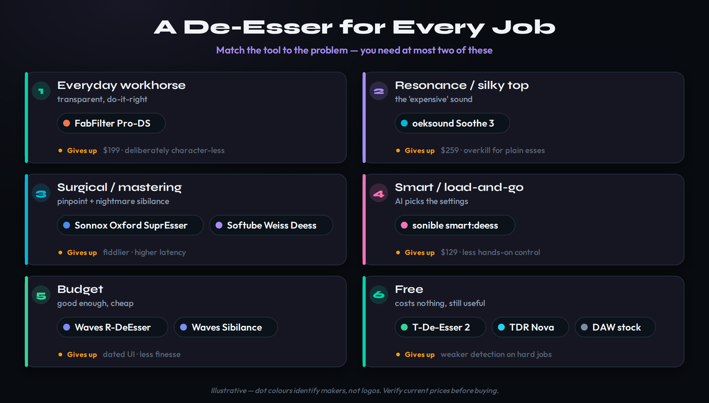
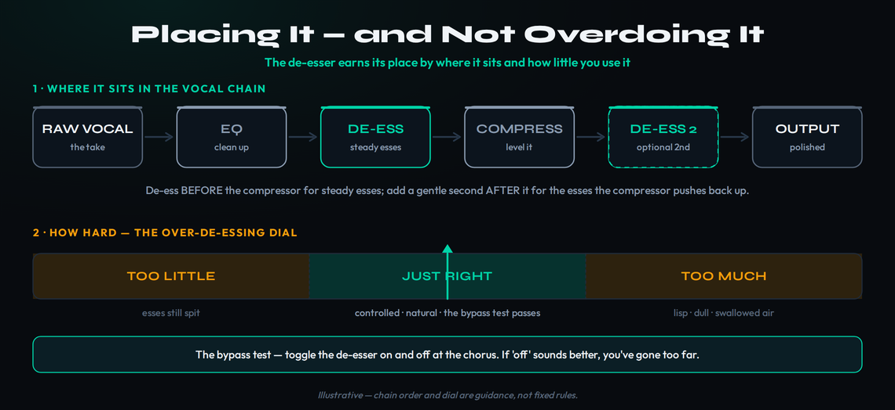

The best de-esser for most people is FabFilter Pro-DS (around $199) — the transparent, reliable everyday workhorse whose visuals teach you where sibilance actually lives. If a vocal is harsh and resonant all over and you want that modern, silky top end, add oeksound Soothe 3 ($259) — a dynamic resonance suppressor that does far more than de-essing. For surgical control there is the Sonnox Oxford SuprEsser; for a fast AI workflow, sonible smart:deess ($129); and on a budget, Waves Renaissance De-Esser. But the most important fact in this whole guide is that you may not need to buy anything: Techivation T-De-Esser 2 and TDR Nova are both free and excellent, and your DAW’s stock de-esser is fine for light work. Almost nobody needs more than two of these. Sanity-check the rest of your chain with our guide to mixing vocals.
This article contains affiliate links. If you buy through them we may earn a commission at no extra cost to you. It does not affect our picks — every recommendation here is chosen on merit, and the free options are recommended precisely because they cost nothing and, in this category, give up remarkably little. Prices were checked in June 2026 and move often; always confirm the current price on the vendor’s page before buying.
Updated June 2026 — sibilance is the sound that ruins more home-recorded vocals than any other single problem. It is that harsh, spitting, ice-pick “sssss” and “tssss” that jumps out of an otherwise lovely take, the thing that makes a vocal feel amateur even when the singing is great. The reflex fix — grab an EQ and carve a hole in the top end — is the single most common way producers make their vocals worse, trading a harsh ‘S’ for a dull, lispy voice with no air. A de-esser exists to solve this properly, and understanding why it works the way it does is worth more than any shopping list.
So this guide does two things. First it teaches you what a de-esser actually is and how to use one without wrecking your vocal — the part most roundups skip and the part that will still be true in ten years. Then it ranks the tools by job: the everyday workhorse, the resonance specialist, the surgical problem-solver, the smart load-and-go option, the budget pick, and the free ones that are genuinely good enough that many people stop there. Throughout, the honest bias is the one the affiliate-driven roundups bury: you need at most two of these, and one of the two can be free. If you are new to all of this, our how to mix vocals and how to EQ vocals guides cover the surrounding fundamentals.
One thing to settle before any plugin: the cleanest de-essing happens at the source, not in the mix. Sibilance is exaggerated by a bright large-diaphragm condenser pointed straight at the mouth, by a singer working too close to the capsule, and by the absence of a pop filter or a slight off-axis angle. If you can re-track, moving the singer a few inches back, angling the mic so the airflow from the teeth passes beside rather than into the capsule, and choosing a smoother mic will remove more harshness than any plugin can — and it costs nothing. A de-esser is for the sibilance you could not prevent, not a substitute for sane recording technique. With that said, most of us are handed a finished take we cannot redo, which is exactly why these tools exist.
The De-Esser Trap (sibilance is resonance, not volume)
Here is the idea that reframes everything: sibilance is a resonance problem, not a volume problem. When a singer makes an ‘S’, ‘T’, ‘Z’, ‘Sh’ or ‘Ch’ sound, they push a concentrated burst of high-frequency energy — usually somewhere between about 5 and 9 kHz, depending on the voice and the mic — for a fraction of a second. The rest of the time, that band carries the air, brightness and presence that makes a vocal sound open and expensive. The ‘S’ is not unwanted; it is a normal, necessary part of speech. It only becomes a problem when it is too loud relative to everything around it, which a close mic, a bright preamp, compression and saturation all conspire to make worse.
This is why the instinctive EQ fix backfires. If you find the harsh band and cut it with a static EQ, you pull that region down all the time — on every word, whether or not an ‘S’ is happening. The esses do get quieter, but so does every breath, every bit of air, every consonant’s crispness. The voice goes dull and, because you have flattened the consonants that carry intelligibility, it starts to sound like the singer is lisping. You have traded a harsh vocal for a muffled one. The harshness lived in the band only for a few milliseconds at a time, but your fix lives there permanently. That mismatch — a momentary problem met with a permanent cut — is the de-esser trap, and it catches almost everyone at first.
It is worth understanding why sibilance feels so much worse on modern, home-recorded vocals than it did on old records. Almost every step of a contemporary chain pushes the sibilant band up. Close-mic technique in an untreated room favors the bright, breathy detail of a condenser. Compression — and especially the heavy, fast compression common on pop and rap vocals — turns the level down on the loud body of the voice while leaving the quick sibilant transients comparatively untouched, so the esses pop out further with every dB of gain reduction. High-frequency saturation, exciters, and the bright top-end boosts producers reach for to make a vocal "expensive" all add energy precisely where sibilance lives. By the time a vocal has been compressed, saturated, EQ-boosted and loudened, an ‘S’ that was fine at the source can be genuinely painful — which is why de-essing is a near-universal step now rather than an occasional repair.
A de-esser solves it by being dynamic. It watches the signal, and only when a sibilant burst exceeds a threshold does it reduce the level of the offending high-frequency band — and only for the instant that burst lasts. The moment the ‘S’ is over, the band springs back to full level and your air and presence return. In other words, a de-esser is a frequency-conscious compressor that listens for sibilance and ducks it precisely when it occurs, leaving everything else untouched. That single behavioral difference — dynamic and band-limited, versus static and broad — is the entire reason the right tool sounds natural and the EQ-notch hack sounds like a lisp.

A de-esser removes the sibilant band dynamically, only on the ‘S’. An EQ notch cuts the whole top end all the time and gives you a lisp. Illustrative — spectra are schematic, not measured.
What a De-Esser Actually Does (and the controls that matter)
Under the hood, every de-esser has to answer two questions many times a second: is there sibilance right now, and how should I reduce it. How a given plugin answers those questions is what separates a transparent de-esser from one that lisps and pumps, so it is worth knowing the vocabulary before you spend money.
Wideband versus split-band. A wideband de-esser turns down the whole signal briefly when it detects an ‘S’, like a fast compressor keyed to sibilance. It can sound natural at light settings but, pushed hard, it makes the entire vocal duck on every ess — a subtle lurch you hear as pumping. A split-band de-esser instead splits the signal at a crossover and only turns down the high band, leaving the body of the voice completely alone. Split-band is generally more transparent for serious de-essing; wideband can be gentler and more “glued” for subtle work. The best tools, like FabFilter Pro-DS, let you choose, and even offer a linear-phase split-band mode (the same family of processing behind a tool like FabFilter Pro-Q 4) for the cleanest possible crossover.
Detection — telling an ‘S’ from a hi-hat. The hard part of de-essing is not reducing the band; it is deciding when. Naive de-essers trigger on any high-frequency energy, so they clamp down on cymbal bleed, breaths, and bright consonants that are not actually harsh. Smarter detection — Pro-DS’s “Single Vocal” algorithm, sonible’s neural-network phoneme detection — is trained to recognize the spectral signature of true sibilance and ignore the rest, which is why those tools can be set and left alone where a basic de-esser needs babysitting. Good detection is the single biggest quality difference between a cheap de-esser and an expensive one.
Look-ahead. Sibilant transients are fast — the front of an ‘S’ can be over before a normal detector has reacted, so the harshest part slips through. Look-ahead lets the plugin peek a few milliseconds into the future (FabFilter Pro-DS offers up to about 15 ms) so it can start reducing exactly as the ‘S’ begins rather than a beat late. It is the difference between catching the whole transient and shaving only its tail. The cost is latency, which is irrelevant while mixing but matters if you are tracking through the plugin.
The three knobs you will actually touch. Almost every de-esser comes down to threshold (or amount/processing — how loud an ess has to be before reduction kicks in), frequency/range (where the sibilant band sits and how wide it is), and sometimes range or max reduction (how much it is allowed to pull down). The workflow is always the same: solo or “listen” to the sibilant band so you can hear exactly what the plugin is targeting, tune the frequency until you have isolated the harsh ‘S’ and nothing else, then lower the threshold until the esses are controlled — and no further. Everything else is refinement. Our dynamic EQ and de-esser entries go deeper on the underlying processing if you want it.
Two more controls separate a good result from a great one. The first is monitoring: every serious de-esser lets you audition just the band it is targeting — a "listen", "filter" or "diff" mode — and using it is the difference between guessing and knowing. Solo the band, tune the frequency until you hear the harsh ‘S’ isolated from the body of the voice, and only then set the amount. The second is stereo handling. On a doubled or widened vocal, sibilance can sit in the sides of the stereo image, and a de-esser with mid/side or stereo-linking options lets you tame the harshness in the sides without dulling the centered lead. It is a small feature that matters enormously on modern, wide vocal productions, and it is one reason the better tools cost what they do.
How We Picked (no fake benchmarks)
A word on method, because it shapes every pick below. There is no honest single “score” for a de-esser. The right tool depends entirely on the job — a transparent everyday de-esser and a surgical problem-solver are not competing for the same number — so we have deliberately not ranked these one-to-ten or invented per-plugin ratings. Doing that would be dishonest, because the “best” de-esser for a clean pop vocal is the wrong one for a nightmare podcast repair, and vice versa.
Instead we grouped the field by job and chose, for each job, the tool the wider community of mix engineers reaches for, cross-checked against each plugin’s actual feature set and current price. Where a tool is widely regarded as the standard for a task — Pro-DS as the everyday workhorse, Soothe for resonance, Sonnox for surgical work — we say so and explain what it gives up in return, because every choice is a trade. The map below is the whole guide in one image; the sections after it explain each pick in turn.

Match the tool to the problem. Most producers need at most two of these. Illustrative — dot colors identify makers, not logos; verify current prices.
Best Overall Workhorse — FabFilter Pro-DS
If you buy one de-esser and never think about it again, make it FabFilter Pro-DS (around $199 at the time of writing). It is the consensus everyday workhorse for a simple reason: it is exceptionally transparent, fast to dial in, and its detection is smart enough to be trusted on a whole album of vocals without fighting you. Its “Single Vocal” mode uses an intelligent algorithm that reliably tells real sibilance from hi-hat bleed and bright consonants, so it reduces the esses and leaves the music alone.
The feature set is everything you actually need and nothing you do not: wideband or linear-phase split-band processing, an optional look-ahead of up to around 15 ms to catch the fastest transients, adjustable stereo linking with mid-only or side-only options, and up to four-times linear-phase oversampling for the cleanest results on export. Its real teaching gift is the spectrum display — you can see the sibilant band light up as it is processed, which is the fastest way to learn where sibilance lives in your particular voice and mic. There is also an “Allround” mode that turns Pro-DS into a high-frequency limiter for harsh hi-hats, fizzy cymbals or a bright full mix, so it earns its keep far beyond vocals.
What does it give up? Two things, honestly. First, the price: $199 is real money for a tool that does one job, and the free options below will get a careful user a long way. Second, it is deliberately character-less — it is a clean, surgical tool, not a colorful one, so if you want a de-esser that also adds a flattering top-end sheen, that is not its design. For most people, neither is a dealbreaker: you buy Pro-DS because it is the one that gets out of your way. Pair it with our how to make vocals sound professional guide and you have a vocal top end sorted.
Best for Resonance & the “Expensive” Top — oeksound Soothe 3
Sometimes the problem is bigger than a few loud esses. A vocal can be harsh and ringy across the top end — whistly held notes, resonant peaks that move with the performance, a brittle quality no single de-ess band can fix. That is the job for oeksound Soothe 3 ($259, or a $55 upgrade from any previous Soothe; it shipped in May 2026). Strictly, Soothe is not a de-esser at all — it is a dynamic resonance suppressor that scans the spectrum, finds whatever resonances are spiking at that instant, and ducks them only where and when they occur. De-essing is just one thing it happens to do extremely well along the way.
Soothe 3’s rebuilt engine has two modes worth knowing: a Soft mode with an adaptive threshold that is a remarkably safe starting point on almost any source, and a Hard mode with a fixed threshold that reacts more like a compressor for aggressive control or creative grabs. A single “Detail” knob now governs how surgically it works, and a new low-latency mode adds zero samples of latency at base sample rates (about 1 ms at higher rates), which finally makes it usable while tracking. The result is the modern, silky, expensive-sounding top end you hear on professional vocals — and, crucially, it is the tool that can rescue a badly recorded vocal that no amount of plain de-essing would save.
The trade is straightforward: at $259 it is the most expensive option here, it requires an iLok account (no physical dongle), and it is genuine overkill if all you ever need is to tame a couple of loud esses on an otherwise clean vocal. For that simple job, Pro-DS or even a free de-esser is the smarter buy. Soothe earns its price when harshness is everywhere, not just on the ‘S’. We have a full oeksound Soothe 3 review and a head-to-head Soothe 3 vs Gullfoss comparison if this is the tool you are weighing.
Best Surgical & Mastering-Grade — Sonnox Oxford SuprEsser & Softube Weiss Deess
When sibilance is genuinely nasty — a podcast voice that cannot be re-recorded, a vocal where the esses whistle and pierce — you want a scalpel. The Sonnox Oxford SuprEsser (street price roughly $200–250, often discounted in Sonnox sales) is that scalpel. It is built around a frequency-specific compressor with linear-phase crossover filters, so it targets only the exact slice of spectrum that is causing trouble and leaves the rest untouched. Its standout feature is the best FFT display in the category and three listen modes that let you isolate precisely the band being processed, plus an Automatic Level Tracking mode that keeps the reduction consistent whether the singer whispers or belts. Reviewers have long called it about as transparent as de-essing gets even at heavy reduction — provided you keep the band narrow.
Alongside it sits the Softube Weiss Deess ($199), a faithful software model of the legendary Weiss DS1-MK3 mastering hardware. It is the mastering-grade choice: dual-band processing lets you tackle two independent problem areas at once — say harsh highs and aggressive midrange sibilance — and like the Sonnox it gives you a clear FFT view of what you are doing. Its character is gentle; it tends to ease harshness back rather than clamp it, which is exactly what you want on a finished mix or master where a heavy hand would be obvious.
What do these surgical tools give up? Speed and simplicity. The SuprEsser has a slightly dated interface and rewards manual tweaking — it is not a load-and-leave plugin, and its higher latency makes it a mixing tool rather than a tracking one (Sonnox sells a separate low-latency “DS” variant for live use). The Weiss is premium and mastering-focused, more than most bedroom producers need. Reach for these when an ordinary de-esser has failed; for everyday work they are more plugin than the job requires.
Best Smart / Load-and-Go — sonible smart:deess
If you de-ess a lot of vocals and want the plugin to do the thinking, sonible smart:deess ($129, frequently on sale for much less) is the load-and-go option. It uses a trained neural network to identify the exact start and end of each sibilant phoneme — distinguishing an ‘S’ from a ‘Sh’ from a ‘T’ or a plosive ‘P’ — without you having to set a threshold at all. Drop it on a vocal and it builds a “voiceprint” of the singer and starts balancing the sibilants automatically; your job is just to review and refine.
What makes it more than a gimmick is that it processes the whole phoneme spectrally rather than simply ducking the loudest moment, which tends to sound more natural than a basic de-esser, and its “Color” control lets you keep the esses soft, balanced or sharp to taste rather than just dull. It also handles plosives, which most de-essers ignore. For producers who value speed and consistency across many tracks — a podcast editor, a beatmaker cutting a lot of toplines — it is a genuine time-saver.
The trade-offs: it is vocal-centric and gives you less hands-on, see-everything control than Pro-DS or the Sonnox, so if you like to dial things by eye and ear you may find it a touch opaque. And at $129 it sits in the awkward middle — cheaper than the premium tools, but not free. If your workflow rewards automation, it is money well spent; if you enjoy doing the surgery yourself, look elsewhere. A close cousin worth a mention is iZotope RX, whose spectral de-essing is the go-to for dialog and post-production repair.
It is also worth knowing that you may already own a capable de-esser inside a larger suite. iZotope’s Nectar vocal-chain bundles a de-essing module alongside compression, pitch correction and reverb; RX’s spectral De-ess is unusually good at the level-independent, "whitening" treatment that tames whistling esses other tools miss; and many channel-strip and vocal-rider plugins include de-essing as one stage. If your goal is a fast, one-window vocal chain rather than a dedicated surgical tool, those suites can cover sibilance well enough that a separate de-esser becomes a luxury rather than a necessity. As always, the right question is not which plugin scores highest in the abstract, but which one solves the specific problem in front of you with the least fuss.
Best Budget — Waves Renaissance De-Esser & Sibilance
You do not need to spend much. The Waves Renaissance De-Esser (R-DeEsser) has been a studio staple for over a decade and routinely sells for the price of a sandwich during Waves’ near-constant sales — often around $30 or less. It uses an adaptive threshold, sips CPU, and has a slightly darker, more aggressive character that works beautifully on rock and rap vocals, harsh backing-vocal stacks, and anywhere you want the esses gone without ceremony. Its sibling, Waves Sibilance ($34.99 list, also frequently discounted), uses Waves’ Organic ReSynthesis technology for a more transparent, modern result and is the better pick on lead vocals where you want subtlety.
Between the two, R-DeEsser is the blunt, reliable budget workhorse and Sibilance is the gentler, cleaner one; both will solve ordinary sibilance perfectly well. What they give up versus the premium tools is finesse and feedback: the interfaces are dated, the detection is less clever than Pro-DS or smart:deess, and you will do a little more manual tuning to get a transparent result on a difficult source. For the overwhelming majority of home-studio vocals, that is a trade well worth making — these are proof that you do not need to spend $200 to control sibilance. If you are assembling a starter chain, our best mixing plugins for beginners guide puts these in context.
Best Free — Techivation T-De-Esser 2, TDR Nova & Your Stock Plugin
This is the section the affiliate roundups would rather you skipped, because it is where most people should actually start. Techivation T-De-Esser 2 is completely free, and it is so good that working engineers regularly say it beats de-essers they paid for. Its whole philosophy is “listen, do not look”: a handful of controls — a processing knob, four frequency-range modes, oversampling up to eight-times, and a “diff” button to hear exactly what it is removing — and a deliberately minimal interface that keeps you focused on the sound rather than a graph. It adds about a millisecond of latency, needs no iLok, and there is even an iPad version. For a free plugin, it gives up almost nothing; the paid “Pro” sibling mainly adds zero-latency operation and finer control for those who want it.
TDR Nova is the other free essential, and it is the one that will teach you the most. Nova is a dynamic EQ — set up a band around 6 to 9 kHz, make it dynamic, and you have built a de-esser by hand, watching the gain reduction happen on the real-time spectrum. Doing that once teaches you more about what a de-esser is than reading ten reviews, and it doubles as a surgical resonance tool for every other harshness problem in your mix. Many seasoned engineers reach for Nova plus a little manual automation over any dedicated de-esser.
And do not overlook the de-esser you already own: nearly every DAW — Logic, Pro Tools, Studio One, Cubase, Ableton via third-party freebies — ships a stock de-esser that is perfectly capable on light-to-moderate sibilance. The stock tools give up the smart detection and transparency of the dedicated plugins, so they need a more careful hand on a difficult source, but for the everyday job of taming a slightly spitty vocal they are free, installed, and instant. Between T-De-Esser 2, TDR Nova and your stock plugin, a careful producer never strictly has to buy a de-esser at all — which is exactly why we put this section before telling you what to spend. See our best free VST plugins roundup for more no-cost essentials.
How to Actually Use One (placement, the bypass test, and beyond vocals)
Owning the right de-esser is half the battle; using it well is the other half, and it is where most of the damage gets done. Start with placement. The classic move is to put the de-esser before your compressor for steady, predictable esses, so the compressor receives an already-controlled signal and does not slam down on a sibilant peak. But a compressor raises quiet detail, which can push esses back up — so a very common professional approach is a gentle de-esser before the compressor and a second light one after it. Think of de-essing as two small passes rather than one heavy one; spreading the work across two instances almost always sounds more natural than asking a single de-esser to remove everything at once — our vocal chain builder can help you lay out the order. Our compression on vocals guide covers the other half of that chain.
Two placements people forget are reverb sends and backing-vocal stacks. A bright reverb or delay will smear sibilance into a long, hissy tail, so putting a de-esser before the reverb send — so the effect never receives the harsh ‘S’ in the first place — keeps your spaces lush without the splashy top end. And a stack of doubled or tripled backing vocals multiplies sibilance: ten layered ‘S’ sounds are far harsher than one, so a single de-esser across the whole backing-vocal bus is usually cleaner and lighter on CPU than ten individual instances. The general principle is to de-ess shared work on the bus and reserve per-track de-essing for the lead, where you want the most control.

Where the de-esser sits in the chain, and how to know when you have used too much. Illustrative — chain order and dial are guidance, not fixed rules.
Then comes the part nobody can do for you: knowing when to stop. Once you start listening for sibilance, you become hyper-sensitized to it and begin to over-hear esses that were never really a problem — and the temptation is to keep cutting until the vocal is lifeless. The cure is the bypass test: toggle the de-esser on and off during a sibilant section, usually the chorus, and honestly ask whether “off” sounds better. If it does, you have gone too far. A well-de-essed vocal should sound like the harshness vanished but the crispness and intelligibility of the consonants remain. The instant the singer sounds like they are lisping, or the top end goes dull and airless, back the amount off and narrow the band. Less is almost always more.
Finally, remember that a de-esser is not just for vocals. The exact same tool that tames a harsh ‘S’ will tame harsh hi-hats and cymbals, fizzy overheads, a picky acoustic guitar, or a bright, brittle full mix or master. FabFilter Pro-DS even includes an Allround mode designed specifically for high-frequency limiting of non-vocal material, and resonance suppressors like Soothe are used across whole mixes routinely. Anywhere a narrow, dynamic band of high-frequency harshness pokes out and you want it gone without dulling everything around it, a de-esser is the cleanest tool for the job. And the most powerful de-esser of all is free and already in your DAW: manual clip-gain or volume automation on the few worst esses, which removes them perfectly with zero processing artifacts. Many top engineers ride the obvious offenders by hand and let the plugin handle the rest.
Which Should You Actually Buy?
Here is the honest bottom line, free of the “buy them all” energy of most roundups. If you buy exactly one, buy FabFilter Pro-DS. It is the most transparent and reliable everyday de-esser, the visuals teach you the skill, and it doubles as a high-frequency limiter for the rest of your mix. It is the safe, do-it-right choice and you will use it forever.
If your budget allows a second, add oeksound Soothe 3 — not as another de-esser, but as the resonance tool that gives you the modern, silky, expensive top end and rescues vocals that plain de-essing cannot. Pro-DS for the precise job, Soothe for the broad one: between them you have essentially every sibilance and harshness problem covered, and most professionals who own both use them for genuinely different tasks.
If money is tight, you are already done. Techivation T-De-Esser 2 or TDR Nova — both free — plus your DAW’s stock de-esser will handle the overwhelming majority of vocals, and you can add a Waves Renaissance De-Esser for a few dollars on sale when you want a second flavor. The thing not to do is buy every plugin in this guide. Sibilance is one narrow problem, and two well-chosen tools — at most — solve it completely. Spend the money you save on better source recording, which prevents sibilance in the first place far more effectively than any plugin removes it.
Practical Exercises
Load your stock de-esser or free TDR Nova on a vocal that spits. Turn the threshold or processing all the way until you can clearly hear it crushing the esses, then engage the “listen” or solo-band feature so you hear only the targeted band. Sweep the frequency until the ‘S’ is the loudest thing you hear and the body of the voice falls away. Now back the amount off slowly until the esses are controlled but still present. You have just dialed a de-esser the way professionals do — by isolating the band first, reducing second.
Take a vocal you have already de-essed and loop the chorus. Toggle the de-esser on and off every few bars and write down, honestly, which version sounds better. If “off” wins even once, you have over-de-essed — reduce the amount and narrow the band until “on” clearly wins on harshness while keeping the consonants crisp. This trains the single most valuable de-essing instinct: knowing when to stop before the vocal starts to lisp.
Set up a vocal chain with a gentle de-esser before your compressor and a second light de-esser after it. Tune the first to catch the steady esses and the second to catch only the sibilance the compressor pushes back up — each doing a little, neither doing much. A/B this against a single de-esser pulling the same total reduction in one place. Most people are surprised how much more natural the two-stage version sounds, and you will have built the chain serious vocal engineers actually use — the kind of move we go deeper on in advanced vocal mixing.